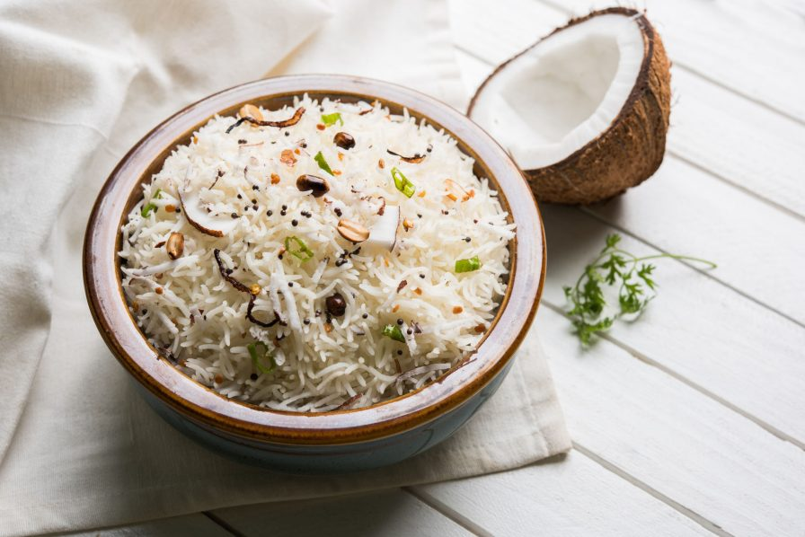

Coconut Rice Recipe

Ingredients
- 1 cup long-grain white rice
- 1 3/4 cups coconut milk
- 1/2 cup water
- 1 tablespoon vegetable oil
- 1 teaspoon salt
- 1-2 tablespoons sugar (optional, for sweetness)
- 1/2 cup shredded coconut (optional, for added texture and flavor)
- Fresh cilantro or chopped green onions for garnish (optional)
Steps
- Rinse the rice under cold water until the water runs clear. This helps remove excess starch.
- In a bowl, mix the coconut milk and water. If the coconut milk is thick, you can dilute it with a bit more water.
- In a saucepan or rice cooker, heat the vegetable oil over medium heat.
- Add the rinsed rice and sauté for 1-2 minutes until the rice is lightly toasted.
- Pour the coconut milk and water mixture into the saucepan with the rice.
- Add salt and sugar (if using). Stir to combine.
- Bring the mixture to a boil, then reduce the heat to low, cover, and simmer. Allow it to cook for about 15-20 minutes, or until the rice is tender and has absorbed the liquid.
- Once the rice is cooked, fluff it with a fork to separate the grains.
- If you're using shredded coconut for added texture, you can toast it in a dry skillet over medium heat until golden brown. Sprinkle the toasted coconut over the cooked rice.
- Garnish the coconut rice with fresh cilantro or chopped green onions for added flavor and freshness.